数学模型是用数学语言概括地或近似地描述现实世界事物的特征、数量关系和空间形式的一种数学结构。从广义角度讲，数学的概念、定理、规律、法则、公式、性质、数量关系式、图形、图表、程序等都是数学模型。数学的模型思想是一般化的思想方法，数学模型的主要表现形式是数学符号表达式、图形和图表，因而它与符号化思想有很多相通之处，同样具有普遍的意义。不过，也有很多数学家对数学模型的理解似乎更注重数学的应用性，即把数学模型描述为特定的事物系统的数量关系结构。如通过数学在经济、物理、农业、生物、社会学等领域的应用，构造出各种数学模型。为了把数学模型与数学知识或是符号思想明显地区分开来，本文主要从狭义的角度讨论数学模型，即重点分析小学数学的应用及数学模型的构建。
数学模型是运用数学的语言和工具，对现实世界的一些信息进行适当简化，经过推理和运算，对相应的数据进行分析、预测、决策和控制，并且要经过实践的检验。如果检验的结果是正确的，便可以指导我们的实践。如上所述，数学模型在当今市场经济和信息化社会已经有比较广泛的应用；因而，模型思想在数学思想方法中有非常重要的地位，在数学教育领域也应该有它的一席之地。
当今信息化、数字化和大数据的时代，对数学思想方法产生了重大影响，如模型思想、算法思想、推理思想、统计思想等会得到进一步的重视和发展。随着计算机技术的迅速发展，它的应用领域不断扩大，不但能够代替人脑完成大量的数据计算和处理，还能够代替人类完成精细的体力劳动，如各个领域的机器人的应用、3D打印技术等都需要设计程序，这些程序都是数学模型。因此，模型思想的应用会日益广泛。
如果说符号化思想更注重数学抽象和符号表达，那么模型思想更注重数学的应用，即通过数学结构化解决问题，尤其是现实中的各种问题；当然，把现实情境数学结构化的过程也是一个抽象的过程。
《标准（2011版）》在课程内容部分中明确提出了“初步形成模型思想”，并具体解释为“模型思想的建立是帮助学生体会和理解数学与外部世界联系的基本途径。建立和求解模型的过程包括：从现实生活或具体情境中抽象出数学问题，用数学符号建立方程、不等式、函数等表示数学问题中的数量关系和变化规律，求出结果并讨论结果的意义。这些内容的学习有助于学生初步形成模型思想，提高学习数学的兴趣和应用意识”。并在教材编写建议中提出了“教材应当根据课程内容，设计运用数学知识解决问题的活动。这样的活动应体现‘问题情境—建立模型—求解验证’的过程，这个过程要有利于理解和掌握相关的知识技能，感悟数学思想、积累活动经验；要有利于提高发现和提出问题的能力、分析和解决问题的能力，增强应用意识和创新意识”。
这是否可以理解为：在小学阶段，从课程标准的角度正式提出了模型思想的基本理念和作用，并明确了模型思想的重要意义。这不仅表明了数学的应用价值，同时明确了建立模型是数学应用和解决问题的核心。
数学的发现和发展过程，也是一个应用的过程。从这个角度而言，伴随着数学知识的产生和发展，数学模型实际上也随后产生和发展了。如自然数系统1，2，3，…是描述离散数量的数学模型。2000多年前的古人用公式计算土地面积，用方程解决实际问题等，实际上都是用各种数学知识建立数学模型来解决问题的。就小学数学的应用来说，大多数是古老的初等数学的简单应用，也许在数学家的眼里，这根本就不是真正的数学模型；不过，小学数学的应用虽然简单，但仍然是现实生活和进一步学习所不可或缺的。
小学数学中的模型如表4-1所示。
表4-1
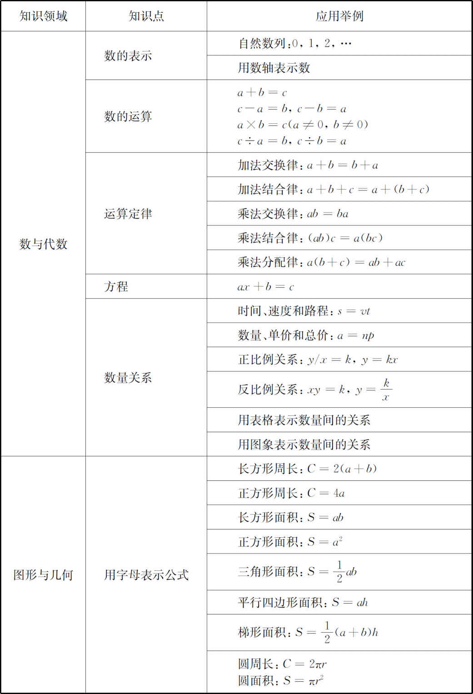
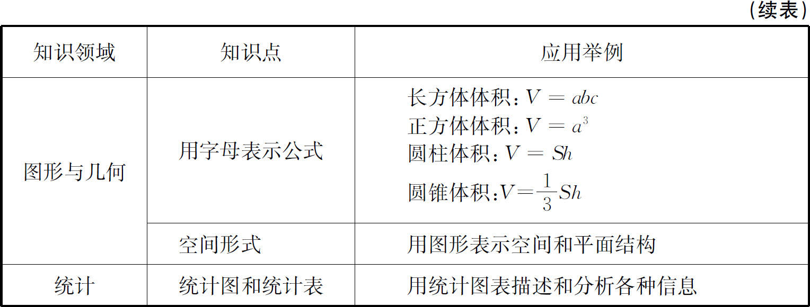
从表格中可以看出：模型思想与符号化思想都是经过抽象后用符号和图形表达数量关系和空间形式，这是它们的共同之处；但是模型思想更加重视如何经过分析抽象建立模型，更加重视如何应用数学解决生活和科学研究中的各种问题。正是因为数学在各个领域的广泛应用，不但促进了科学和人类的进步，也使得人们对数学有了新的认识：数学不仅仅是数学家的乐园，它也不应是抽象和枯燥的代名词，它是全人类的朋友，也是广大中小学生的朋友。广大教师在教学中结合数学的应用和解决问题的教学，要注意贯彻课程标准的理念：一方面要注重渗透模型思想，另一方面要教会学生如何建立模型，并喜欢数学。
学生学习数学模型大概有两种情况：第一种是基本模型的学习，即学习教材中以例题为代表的新知识，这个学习过程可能是一个探索的过程，也可能是一个接受学习的理解过程；第二种是利用基本模型去解决各种问题，即利用学习的基本知识解决教材中丰富多彩的习题以及各种课外问题。
数学建模是一个比较复杂和富有挑战性的过程，这个过程大致有以下几个步骤：（1）理解问题的实际背景，明确要解决什么问题，属于什么模型系统；（2）把复杂的情境经过分析和简化，确定必要的数据；（3）建立模型，可以是数量关系式，也可以是图形；（4）解答问题。下面结合案例作简要解析。
第一，学习的过程可以经历类似于数学家建模的再创造过程。现实生活中已有的数学模型基本上是数学家和物理学家等科学家们把数学应用于各个科学领域经过艰辛的研究创造出来的，使得我们能够享受现有的成果。如阿基米德发现了杠杆定律：水平平衡的杠杆，物体到杠杆支点的距离之比，等于两个物体重力的反比，即F 1 ：F 2 ＝L 2 ：L 1 。根据课程标准的理念，学生的学习过程有时是一个探索的过程，也是一个再创造的过程；也就是说有些模型是可以由学生进行再创造的，可以把科学家发明的成果再创造一次。如在学习了反比例关系以后，可以利用简单的学具进行操作实验，探索杠杆定律。再如利用若干个相同的小正方体拼摆成一个长方体，探索长方体中含有小正方体的个数与长方体的长、宽、高的关系，进而归纳出长方体的体积公式，建立模型V ＝abc ，这是一个模型化的过程，也是一个再创造的过程。
第二，对于大多数人来说，在现实生活和工作中利用数学解决各种问题，基本上都是根据对现实情境的分析，利用已有的数学知识构建模型。这样的模型是已经存在并且是科学的，并不是新发明的，由学生进行再创造也几乎是不可行的；换句话说，有些模型由于难度较大或不便于探索，不必让学生再创造。如两个变量成反比例关系，如果给出两个变量数据变化的表格，学生通过观察和计算有可能发现这两个量的关系。但是如果让学生动手实践操作去发现规律，还是有一定难度的。再如物体运动的路程、时间和速度的关系为s ＝vt ，利用这个基本模型可以解决各种有关匀速运动的简单的实际问题。但是由于这个模型比较抽象，操作难度较大，因而也不适合学生进行再创造。教师只需要通过现实模拟或者动画模拟，使学生能够理解模型的意义便可。
第三，应用已有的数学知识分析数量关系和空间形式，经过抽象建立模型，进而解决各种问题。传统上应用题的编排结构是与四则运算、混合运算相匹配，包括有连续两问的应用题、相似应用题的比较、多个问题构成的问题串，这些都是很好的传统做法和经验，是知识结构的基础。但是这种结构往往是线性的。如果以数学模型为核心进行问题解决的教学，构建问题链，可构成网状结构，从而可以最大限度地整合丰富多彩的问题，也应该是很好的方法。
以植树问题为例，可以封闭圆圈植树问题为核心模型，再演变出其他模型。封闭圆圈植树中的点与间隔一一对应，长度÷间隔＝棵数。再根据实际情况演变出其他模型，如图4-1所示。
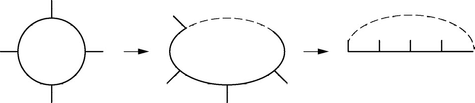
图4-1
（1）一端栽一端不栽与封闭圆圈植树模型相同：长度÷间隔＝棵数。
（2）两端都栽：长度÷间隔＋1＝棵数。
（3）两端都不栽：长度÷间隔-1＝棵数。
再以路程＝速度×时间，用符号表示为s ＝vt 为例，模型结构图如图4-2所示，其中a 是常数。
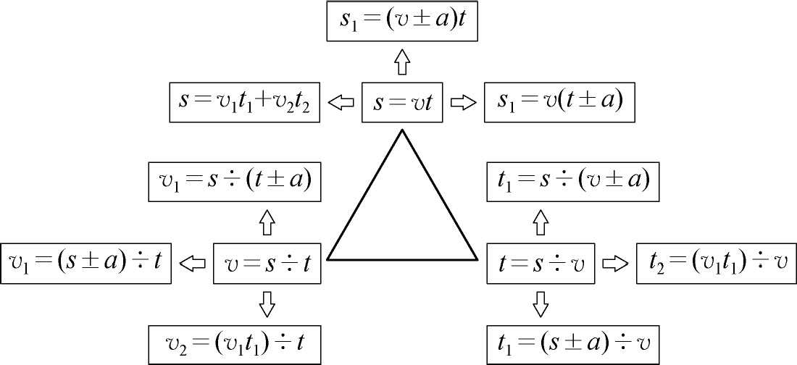
图4-2
图4-2中s ＝vt 及其基本变式v ＝s ÷t 、t ＝s ÷v 构成三角形结构，然后分别向三个方向变化，各自改变一个变量或两个变量产生很多变式，这些关系式基本涵盖了小学数学有关时间、速度、路程的各种关系式。这样在解决所有相关问题时不必过多关注纷繁复杂的情境和交通工具，只需把思维主要集中在模型上。
案例1 甲地到乙地原来运行的是动车，上午8时出发中午12时到达，运行路程是700千米。现在运行的是高铁，每小时比动车快105千米，上午8时出发，几时到达？
分析 （1）此题是生活中的实际问题，属于时间、速度、路程的问题，表面上看信息丰富而复杂，实际上要解决的问题是求高铁的运行时间，t ＝s ÷v 。
（2）不管是动车还是高铁，题目中的s 不变。
（3）高铁的v 比动车的大，可用t 1 ＝s ÷（v ＋a ）的数学模型，v 是动车的速度。
（4）根据题中的信息，v ＝700÷4＝175（千米/时），a ＝105（千米/时）。所以v ＋a ＝175＋105＝280（千米/时）。
（5）则t 1 ＝700÷280＝2.5（时）。
（6）高铁8时出发，10：30到达。
案例2 甲乙两地相距1200米，王老师以每分80米的速度从甲地向乙地步行，同时一只狗也从甲地向乙地跑去，每分比王老师快40米，并且到达乙地后立即往回跑，与王老师相遇后，继续重复以上动作，直到王老师到达乙地为止。这只狗一共跑了多少米？
分析 这道题的本质是关于s 、v 、t 之间的数量关系，可应用s ＝vt 这一模型求解。求的是狗的s ，狗的v 等于王老师的速度加40，再想办法找到狗的t ；表面上看狗跑来跑去不知如何找到狗的时间，实际上狗与王老师同时散步、同时停止，所以狗跑的时间与王老师走的时间是相等的。
很显然，王老师走的时间很容易求出来。t ＝1200÷80＝15（分），狗的v ＝80＋40＝120（米/分）。s ＝120×15＝1800（米）。
从上面的解答过程来看，小学数学的情境还是比较容易理解的，模型系统也容易确定。如果说此题比教材中的一般习题有难度的话，就是速度和时间等数量没有直接给出，拐了个弯。也就是说难点在于知道模型系统后相应的数量怎么准确地找出来，一定要注意题中对每一个量是怎样叙述的，有什么特殊的要求，在认真读题的基础上准确地找出来或计算出来。更要注意s ＝vt 中的三个量一定要对应同一种交通工具。
案例3 有一根20米长的绳子，要剪成2米和5米两种规格的跳绳，每种跳绳各剪多少根？（要求绳子无剩余，并且每种规格的跳绳至少要有一根。）
分析 此题从表面上看，是小学数学整数乘除法的一般问题，但是由于题目中有特殊要求，无法直接列式解答。如果用方程，题目中涉及了两个未知数，属于二元一次方程，超出了小学数学的范围。那么，面对这样的问题如何解决呢？在小学数学中面对一些非常规的问题时，有时列表枚举或者猜测的方式都是可行的策略，只不过会繁琐一些（见表4-2）。
表4-2
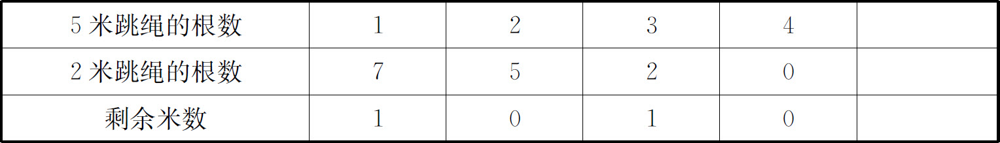
由上表可知符合要求的答案为：5米和2米的跳绳分别剪2根和5根。
此题如果用方程解决，可设5米和2米的跳绳分别剪x 根和y 根，可列方程：5x ＋2y ＝20。可仿照正比例关系y ＝kx 图象的画法，在有方格纸的坐标系里，通过两点（0，10）和（4，0）画出一条直线，就是方程5x ＋2y ＝20的图象。再找出图象与方格的交叉点重合的点，就是方程的解。
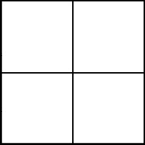
图4-3
案例4 由若干个大小相同的正方体纸箱搭成的货物堆，从正面、侧面、上面三个方向看到的都是如图4-3所示的形状。
（1）这堆货物的形状可能是什么？
（2）如果这堆货物的总质量是630千克，其中每个纸箱的质量相等，并且在80千克到100千克之间。这堆货物有几箱？
分析 （1）根据题目给出的信息，这堆货物是由正方体搭成的，上面的正方体不能悬空，为了保证从上面看到的是大正方形，下面一层必须有4个正方体。如果上面一层也有4个，那么这堆货物就是由8个纸箱搭成的大正方体。再考虑把上面一层的4个正方体随意取走一个，从正面、侧面、上面观察，还是大正方形，那么这堆货物就是由7个纸箱搭成的。如果再取走一个，取走与第一个取走的面挨着的，就会出现从一个方向观察不是大正方形的情况；如果第二个取走的是与第一个取走的相对着的一个，那么从哪个方向观察，都仍然是大正方形，那么这堆货物就是由6个纸箱搭成的。很显然，再取走一个，上面一层只有一个纸箱，就不满足条件了。所以这堆货物的数量在6到8之间，形状可能如图4-4所示。
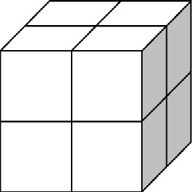 |
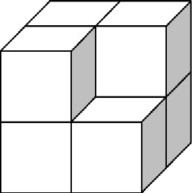 |
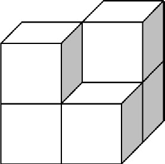 |
图4-4
（2）630÷8＝78.75（千克），630÷7＝90（千克），630÷6＝105（千克）。所以这堆货物有7箱。
方程是初等数学代数领域的主要内容，也是解决实际问题的重要工具，它可以用来描述现实世界中的各种数量关系。
传统的方程是指含有未知数的等式。判断一个式子是不是方程，只需要同时满足两个条件：一个是含有未知数，另一个是必须是等式。如有些小学老师经常有疑问的判断题：x ＝0和x ＝1是不是方程？根据方程的定义，它们满足方程的条件，都是方程。方程按照未知数的个数和未知数的最高次数，可以分为一元一次方程、一元二次方程、二元一次方程、三元一次方程等等，这些都是初等数学代数领域中最基本的内容。方程思想的核心是将问题中的未知量用数字以外的数学符号（常用x 、y 等字母）表示，根据相关数量之间的相等关系构建方程模型。方程思想体现了已知与未知的对立统一。关于方程的定义，张奠宙先生认为“方程的本质是为了求未知数，在已知数和未知数之间建立一种等式关系。既然方程的本意就是要求未知数，如果x ＝1，未知数已经求出来了，也就没有方程的问题了。这类问题与我们学习方程知识没有关系，应当淡化”。 (1)
16世纪以前，人们主要是应用算术和方程方法解决现实生活中的各种实际问题，方程与算术相比，由于未知数参与了等量关系式的构建，更加便于人们理解问题、分析数量关系并构建模型，因而方程在解决以常量为主的实际问题中发挥了重要作用。概括地说，方程思想是中小学数学，尤其是中学数学的重要内容之一。方程在研究和构建现实世界的数量关系模型方面，发挥着重要的作用。
小学数学在学习方程之前的问题，都通过算术方法解决。在引入方程之后，小学数学中比较复杂的有关数量关系的问题，都可以通过方程解决，方程思想是小学数学的重要思想，其中一元一次方程是小学数学的必学内容。
小学数学中方程思想的应用如表4-3所示。
表4-3
| 思想方法 | 知识点 | 应用举例 |
| 方程思想 | 方程 | 用一元一次方程解决整数和小数等各种问题 |
| 分数、百分数和比例 | 用一元一次方程解决分数、百分数和比例等各种问题 | |
| 等量代换 | 二（三）元一次方程组思想的渗透 | |
| 鸡兔同笼 | 用方程解决鸡兔同笼问题 |
方程是义务教育阶段重要的数学思想方法，用方程表示数量关系，不仅能体现方程的应用价值，也有助于学生形成模型思想。根据《标准（2011版）》的理念，方程思想的教学应关注以下几点。
（1）方程中的字母x 、y 等代表未知的数，即未知数，这是代数思想和方程思想的基础。
（2）结合具体情境，通过分析数量关系来理解等量关系，并用方程表示等量关系，再通过解方程解决问题，从而认识方程的作用。
（3）培养学生利用等式的性质解方程，有利于培养代数思维能力及中小学数学学习的衔接。
（4）通过列方程解决稍复杂的问题，认识到方程方法比算术方法具有优越性，培养用方程解决问题的意识。
案例1 小明和小丽两家周末去甲地玩，小明的爸爸开车以90千米/时的速度先出发，小丽的爸爸1小时后从同一地点以120千米/时的速度追赶，几小时能追上？
分析 小丽的爸爸出发时小明的爸爸已经开出90千米，因为他们从同一地点出发，所以追上时两车行驶的路程相等，设x 小时能追上，可列出如下方程：
120x ＝90＋90x ，
30x ＝90，
x ＝30。
所以，3小时能追上。
案例2 妈妈买了3千克香蕉和2千克苹果，一共花了16元。苹果的单价是香蕉的2倍多1元，苹果和香蕉的单价各是多少？
分析 题目涉及的是商品的数量、单价和总价的关系，根据数量关系“单价×数量＝总价”进行分析，题中出现了两种商品，总价也是两种商品的总价。所以等量关系应为“香蕉的单价×香蕉的数量＋苹果的单价×苹果的数量＝总价”。再根据这个等量关系找出题中已知的量，总价16元、香蕉的数量3千克和苹果的数量2千克。未知的是香蕉和苹果的单价，也就是题目中要求的量。
设香蕉的单价是x 元/千克，苹果的单价是y 元/千克。根据题意，可列出如下方程：
3x ＋2y ＝16，y ＝2x ＋1。
根据等量代换的原理，两个方程可合并成一个方程，
3x ＋2（2x ＋1）＝16。
这是在小学数学中遇到含有有关系的两个未知数的方程时能够直接列出一个方程的依据。如和倍、差倍、鸡兔同笼等问题，用方程解决也是利用了这个原理。
解方程，得x ＝2，y ＝5。
案例3 有一批捐赠的图书分给一个班的学生，如果每人分3本，则还缺15本；如果每人分2本，则剩余25本。这个班有多少学生？
分析 根据题意，这批书的数量和学生人数都是定值，那么表示书的数量的式子应该相等。题目求的是学生的数量，可设为未知数，书的数量可由学生的数量表示。
设这个班有x 名学生，那么书的数量可分别表示为3x -15和2x ＋25，因此，可列如下方程：
3x -15＝2x ＋25。
解方程，得x ＝40。
案例4 有一列按一定规律排列的数：1，4，7，10，13，…。其中某三个相邻的数的和是570，这三个数各是多少？
分析 这列数的规律是，每个数比前一个大3，可以用算术方法解决，也可以用方程解决。设这三个数分别是x ，x ＋3，x ＋6。由三个数的和是570，得
x ＋x ＋3＋x ＋6＝570，
3x ＋9＝570，
3x ＝561，
x ＝187。
这三个数分别是187，190，193。
案例5 某市实行阶梯水价，规定每户每月用水量在标准量以内部分的水价为3元/吨，超过的部分水价为5元/吨。李阿姨家上个月用水13吨，交水费49元。该市每户每月用水的标准量是多少吨？
分析 设该市每户每月用水的标准量为x ，如果x ＞13，那么这13吨的水费就都按3元/吨的单价收费，3×13＝39（元），而实际水费是49元，说明13吨里有超标的部分，即应该有x ＜13。综合以上分析，可列方程：
3x ＋5（13-x ）＝49，
3x ＋65-5x ＝49。
出现了小学生不会解的方程，可利用等式的性质变形：
65-49＝5x -3x ，
2x ＝16，
x ＝8。
所以，该市每户每月用水的标准量为8吨。
案例6 无限循环小数0.777…和0.747474…如何化成分数？你能发现什么规律？
分析 根据小数和分数的关系，有限小数化分数比较容易进行。由于无限循环小数具有位数无限的特点，不能直接用有限小数化分数的方法进行。根据循环小数的循环节不断重复出现的特点，循环节是几位数字，就把这个循环小数乘10的几次方；然后它的左起第一个循环节就变成了整数部分，而小数部分仍然是循环节不变的循环小数，它的位数是无限的，大小也不会改变；二者的小数部分相等，二者的差为由循环节变成的整数部分。因此，可利用差倍问题的原理，列方程解决问题。
设x ＝0.777…，那么10x ＝7.777…，求它们的差，10x -x ＝7，解方程，
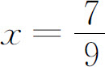
，所以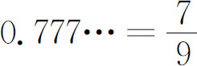
。同理可得，100x -x ＝74，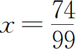
，所以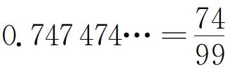
。无限循环小数化分数的规律是：把循环节组成的数作为分子，循环节有几位数字，分母就是由几个9组成的几位数。
函数是初等数学代数领域的主要内容，也是解决实际问题的重要工具，可以用来描述现实世界中的各种数量关系。
设集合A 、B 是两个非空的数集，如果按照某种确定的对应关系f ，对于集合A 中的任意一个数x ，在集合B 中都有唯一确定的数y 和它对应，那么就称y 是x 的函数，记作y ＝f （x ）。其中x 叫做自变量，x 的取值范围A 叫做函数的定义域；y 叫做函数或因变量，与x 相对应的y 的值叫做函数值，y 的取值范围B 叫做值域。以上函数的定义是从初等数学的角度出发的，自变量只有一个，与之对应的函数值也是唯一的。这样的函数研究的是两个变量之间的对应关系，一个变量的取值发生了变化，另一个变量的取值也相应发生变化，中学里学习的正比例函数、反比例函数、一次函数、二次函数、幂函数、指数函数、对数函数和三角函数都是这类函数。实际上现实生活中还有很多情况是一个变量会随着几个变量的变化而相应地变化，这样的函数是多元函数。虽然在中小学里不学习多元函数，但实际上它是存在的，如圆柱的体积与底面半径r 和圆柱的高的关系：
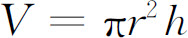
。半径和高有一对取值，体积就会相应地有一个取值；也就是说，体积随着半径和高的变化而变化。函数思想的核心是事物的变量之间有一种依存关系，因变量随着自变量的变化而变化，通过对这种变化的探究找出变量之间的对应法则，从而构建函数模型。函数思想体现了运动变化的、普遍联系的观点。从小学数学到中学数学，数与代数领域经历了从算术到方程再到函数的过程。算术研究具体的确定的常数以及它们之间的数量关系，方程研究确定的常数和未知数之间的数量关系，函数研究变量之间的数量关系。
方程和函数虽然都是表示数量关系的，但是它们有本质的区别。如二元一次方程组中的未知数往往是常量，而一次函数中的自变量和因变量一定是变量，因此二者有本质的不同。方程必须有未知数，未知数往往是常量，而且一定用等式的形式呈现，二者缺一不可，如2x -4＝6。而函数至少要有两个变量，两个变量依据一定的法则相对应，呈现的形式可以有解析式、图象法和列表法等，如集合A 为大于等于1、小于等于10的整数，集合B 为小于等于20的正偶数。那么两个集合的数之间的对应关系可以用y ＝2x 表示，也可以用图象表示，还可以用如表4-4所示的形式表示。
表4-4
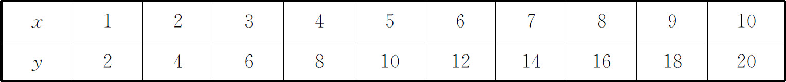
人们运用方程思想，一般关注的是通过设未知数如何找出数量之间的相等关系构建方程并求出方程的解，从而解决数学问题和实际问题。人们运用函数思想，一般更加关注变量之间的对应关系，通过构建函数模型并研究函数的一些性质来解决数学问题和实际问题。方程中的未知数往往是静态的，而函数中的变量则是动态的。方程已经有3000多年的历史，而函数概念的产生不过才300年。
方程和函数虽然有本质的区别，但是它们同属代数领域，也有密切的联系。如二元一次不定方程ax ＋by ＋c ＝0和一次函数y ＝kx ＋b ，如果方程的解在实数范围内，函数的定义域和值域都是实数。那么方程ax ＋by ＋c ＝0经过变换可转化为
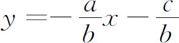
，它们在直角坐标系里画出来的图象都是一条直线。因此，可以说一个二元一次方程对应一个一次函数，这时这个二元一次方程就转化成了一个一次函数。如果使一次函数y ＝kx ＋b 中的函数值等于0，那么一次函数转化为kx ＋b ＝0，这就是一元一次方程。因此，可以说求这个一元一次方程的解，实际上就是求使函数值为0的自变量的值，或者说求一次函数图象与x 轴交点的横坐标的值。一般地，就初等数学而言，如果令函数值为0，那么这个函数就可转化为含有一个未知数的方程；求方程的解，就是求使函数值为0的自变量的值，或者说求函数图象与x 轴交点的横坐标的值。
方程中的未知数有时是动态的，如圆的方程：x 2 ＋y 2 ＝1，虽然x 、y 在区间［-1，1］内可以取任意数值，x 和y 可以理解为变量，但不是函数关系，因为每对确定的绝对值相等的x 的值（0除外），如x 1 ＝＋0.6和x 2 ＝-0.6，都有两个y 的值与之对应，y 1 ＝＋0.8和y 2 ＝-0.8。不满足函数的自变量与因变量一对一或者多对一的法则。如果把圆的方程变换为半圆的方程：
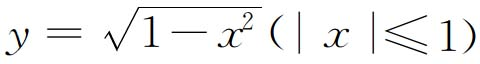
，就可以看成y 是x 的函数。17世纪，随着社会的发展，传统的研究常量的算术和方程已经不能解决以探究变量之间的关系为主的经济、科技、军事等领域的重要问题，这时函数便产生了。函数为研究运动变化的数量之间的依存、对应关系和构建模型带来了方便，从而能够解决比较复杂的问题。
概括地说，方程和函数思想是中小学数学，尤其是中学数学的重要内容之一。方程和函数在研究和构建现实世界的数量关系模型方面，发挥着重要的不可替代的作用。
在小学数学里没有学习函数的概念，但是有函数思想的渗透，与正比例函数和反比例函数最接近的正比例关系和反比例关系是小学数学的必学内容。另外，在小学数学的一些知识中也体现了函数思想，如数与数的一一对应体现了函数思想。方程和函数是小学数学与初中数学衔接的纽带之一。
小学数学中函数思想的应用如表4-5所示。
表4-5
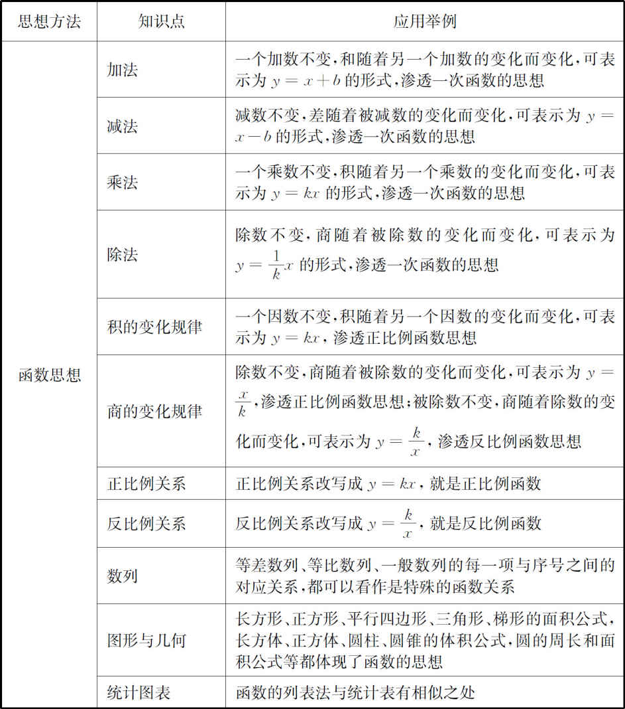
函数是义务教育阶段重要的数学思想方法，用函数表示数量关系和变化规律，不仅能体现函数思想的应用价值，也有助于学生形成模型思想。根据《标准（2011版）》的理念，函数思想的教学应关注以下几点。
（1）正比例关系和反比例关系等函数关系式中的字母x 、y 等代表的是变化的量，即变量，而且这两个量是相关联的量，一个量变化，另一个量会随之变化，这是函数思想的基础。
（2）结合简单情境，认识成正比例的量或反比例的量，通过分析数量关系和变化规律建立比例关系式，再通过解比例关系式解决问题。
（3）能根据给出的有正比例关系的数据在方格纸上画图，并根据其中一个量的值估计另一个量的值。
下面再结合案例谈谈函数思想的教学。
案例1 小明家的果园供游人采摘桃，每千克10元。请写出销售桃的总价（总收入）y 元与数量（千克数）x 之间的关系式。如果某天的销量是50千克，这天的总收入是多少？如果上个月的总收入是12000元，上个月的销量是多少？
分析 此题涉及的也是商品的单价、数量和总价的关系，仍然要根据数量关系“单价×数量＝总价”进行分析。根据题意，已知的量是单价，未知的量是总价和数量，题目已经告诉我们分别用y 和x 表示。因为桃的单价一定，所以它的总价与数量成正比例，可列关系式：y ＝10x 。某天的销量是50千克，总收入是500元。上个月的总收入是12000元，销量是1200千克。
此案例与方程中的案例1相比较，都有两个量分别用y 和x 表示。方程案例1中的y 和x 虽然是未知的量，但是它们实际上是具体的静止的常量，都有一个固定的值，通过解方程可以得到它们的值。此案例的两个量y 和x 则是相关联的变化的量，x 的取值可以是一定范围内（果园内桃子总质量的最大值以内）的任何一个数，y 随x 的变化而变化。只有y 和x 中的一个量取一个具体的值时，另一个量才会相应地取一个具体的值，如此得到案例中的具体问题的解答。
案例2 某地成人的身高与脚长呈正比例关系，比值k ＝6.9。如果设身高为y ，脚长为x 。
（1）身高与脚长的关系式为_____。
（2）某人身高为181.47厘米，该人的脚长是_____。
（3）某人的脚长为25厘米，该人的身高是_____。
分析 （1）一般的正比例关系式是y ＝kx ，此题的k ＝6.9，所以身高与脚长的关系式为y ＝6.9x 。
（2）181.47÷6.9＝26.3（厘米），该人的脚长＝26.3厘米。
（3）6.9×25＝172.5（厘米），该人的身高＝172.5厘米。
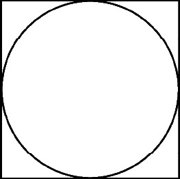
图4-5
案例3 如图4-5所示，正方形内有一个最大的圆，正方形的边长是2r 。如果用x 表示圆的面积，y 表示正方形的面积，请写出y 与x 的关系式，并判断二者成什么关系。
分析 根据题目给出的信息可推出圆的直径为2r ，所以半径为r ，即
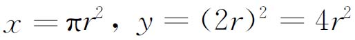
。根据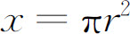
，可得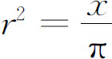
，那么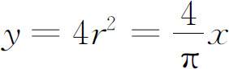
。因为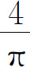
是常数，所以y 与x 的比值是定值，由此推出y 与x 成正比例关系。案例4 爸爸骑自行车上班，开始以正常的速度匀速行驶，行至中途时，停下来与熟人聊天几分钟，然后他加快了速度继续匀速行驶。下面是行驶路程s （米）与时间t （分钟）的关系图象，那么符合行驶情况的大致图象是（ ）。
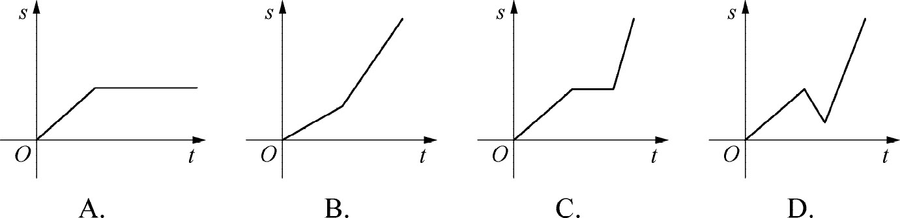
分析 根据题目给出的信息，爸爸中间停留了几分钟，这几分钟内，行驶的路程s 不变，在图象上应该是一段水平线段，由此可判断B、D选项不符合条件。爸爸聊了几分钟后，继续加快速度行驶，那么根据已有的知识和经验，后半段的图象比前半段更陡，可判断A选项不符合条件。所以C是正确答案。
古语云“运筹帷幄之中，决胜千里之外”，这是讲古代在军帐中指挥战争时如何作出正确的战略战术部署，便可取得战争的胜利。后来比喻在做各种事情时认真研究准备、筹划决策，以取得成功。在现代社会中，不论是生产、生活，还是从事科学研究，都要讲究效率，即如何运筹，以选择最优方案，使得人们在时间、空间、人力、物力、财力等方面以最少的投入，获得最大的收益，这种思想就是优化思想，这门学科就是运筹学，是数学的一个分支学科。运筹学最早是研究军事的，后来推广应用到生活的各个领域。
我们所处的当今社会的特点是：数字化信息时代、市场经济社会、人口众多、城镇化、资源稀缺。大到企业管理、人口计划生育、城镇规划管理、资源管理，小到家庭投资理财、城市交通管理、商业网点配置等等，都需要应用优化思想进行筹划决策，提高效率、降低成本、减少浪费、保护环境，这对人口多、资源稀缺、环境污染严重的中国社会意义重大。因此，如果能够让小学生认识到数学的优化思想的重大意义，将促进学生更好地理解数学、认识数学的价值。
田忌赛马是发生在2300年前的故事，孙膑帮助田忌调整赛马的出场顺序，就能够以局部的失利换取整体的胜利，这是优化思想最古老的经典范例。优化思想不仅在军事领域应用广泛，在管理、规划、交通、经济、金融等领域也显示了它的优越性。在管理中，如何统筹规划人力、财力、设备和时间等各种资源，以最优的方式作出安排和分配，使得投入最小，收益最大。城市服务系统中的公共交通管理，对公共交通的线路、数量、路口信号灯的设置、早晚高峰的车辆安排等各方面进行研究，使整个系统达到最优状态，减少交通堵塞、人们在路上的时间和资源的浪费。我国执行多年的计划生育政策有所调整，对原来每对夫妻只能生育一个孩子的限制条件有所放松，改为夫妻双方只要有一方为独生子女的家庭可以生育第2个孩子；这是依据人口发展的优化理论进行的调整，即平均每对夫妻生育2.1个孩子是保证人口数量基本稳定的最佳生育标准，这是利用了数学的统计方法、模型方法和优化思想计算出来的。
在小学数学中，优化思想的体现是初步的，主要有以下几个方面。
（1）在多样化的计算和解题方法中，比较不同方法的特点和优劣。
（2）解决类似于最省钱、省时间等方面的实际问题。
（3）合理安排时间，在较短的时间内，尽可能地做更多的事情。
（4）体会田忌赛马故事中所蕴含的优化思想。
优化思想是个一般化的思想方法，在教学过程中，一方面要让学生体会，在计算和解决问题的过程中，可能出现多种方法和策略，通过学生的自主探索和合作交流，感受解题方法的多样性和不同方法的优劣，每个人都应该反思并学习优秀的方法，从而在学习方法和解题策略上不断提高自己。另一方面，在生活中，存在着怎样购物省钱、如何安排时间做事效率高等方面的问题，都可以利用数学的方法去解决。
还可以通过优化思想进行情感态度和价值观的教育，在做人方面，每个人都应向优秀的名人和身边的人学习，不断完善自己，这也是一个不断优化的过程。
学生的思维水平是有差异的，思考问题的角度和深度也是不同的，教师应给学生充分的自主探索、合作交流的空间和时间，更重要的是要靠学生在自我反思和学习借鉴的过程中顿悟，即爱思考、学会思考是学好数学的重要前提。
案例1 一个普通灯泡5元，平均使用寿命是1年，平均每天电费0.10元；一个节能灯泡35元，平均使用寿命是2年，平均每天电费0.03元。在2年的时间（每年按365天计算）中，使用哪种灯泡更节省费用？
分析 在2年的时间中，普通灯泡需要更换一次，使用每种灯泡的费用就是灯泡本身的价钱加上电费。
使用普通灯泡的费用：5×2＋0.1×365×2＝83（元）。
使用节能灯泡的费用：35＋0.03×365×2＝56.9（元）。
由此可知，使用节能灯泡省钱。
这是理论上的数据，实际生活中还要考虑其他因素，如节能灯泡的质量要有保证，能够使用2年，如果只能使用1年，就不省钱了。
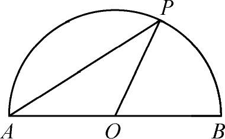
图4-6
案例2 如图4-6所示，点P 在以O 为圆心、AB 为直径的半圆上运动，AB ＝4厘米。设三角形APO 的面积为S ，底边AO 上的高为h ，则S 的最大值是多少？
分析 三角形APO 的底AO ＝2厘米，
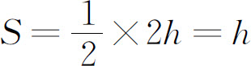
，那么当h 最大时，面积最大。观察上图可知，当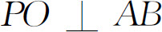
，即h 等于半径时，面积最大。S ＝2（cm2 ）。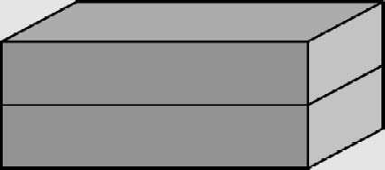
图4-7
案例3 如图4-7所示，把两个形状和大小相同的长方体月饼盒包装成一包，怎样包装最省包装纸？
分析 此题是小学数学比较典型的通过探索活动发现规律的题目，一般情况下教师会给学生足够的学具进行操作，拼出几种包装方法，再通过计算比较表面积的大小找到最佳答案。现在我们从代数思想出发，不用任何操作和具体数量的计算，进行一般性的推导。假设长方体的长、宽、高分别为a 、b 、c ，并且a ＞b ＞c （只要给出三个数的大小排列顺序便可，谁大谁小并不影响用代数方法计算的过程和结论）。
首先要明确的是，问题所求怎样包装最省包装纸，实际上就是求怎样拼才能使拼成的大长方体的表面积最小。每个长方体有6个面，两个长方体拼成一个大长方体后仍然有6个面，但这6个面的面积是原来长方体的10个面的面积，其中有两个面是原来长方体的面，另4个面分别是原来的相同的两个面拼成的；也就是说，大长方体的表面积已经不是原来两个长方体的12个面的面积直接相加的和了，而是它们的和再减去拼在一起的两个面的面积和。原来两个长方体的12个面的面积和是恒定不变的，因而大长方体的表面积的大小，取决于减去的（拼在一起的）两个面的面积和的大小，减去的两个面的面积和越大，大长方体的表面积就越小。根据已知条件a ＞b ＞c ，即b ＞c ，a ＞b ，可推出ab ＞ac ，ac ＞bc ，即ab ＞ac ＞bc 。可得面积最大的面是长为a 、宽为b 的面，所以把最大的两个侧面贴在一起包装最省包装纸，列成公式为：S ＝4（ab ＋bc ＋ac ）-2ab 。
现实生活中有大量的数据需要分析和研究，如人口数量、物价指数、商品合格率、种子发芽率等等。有时需要对所有的数据进行全面调查，如我国为了掌握人口的真实情况，曾经进行过全国人口普查。一般情况下不可能也不需要考察所有对象，如物价指数、商品合格率等，只需要采取抽样调查的方法收集和分析数据，用样本来估计总体，从而进行合理的推断和决策，这就是统计的思想方法，数据分析观念是统计思想的核心。在统计里主要有两种估计方法：一是用样本的频率分布估计总体的分布；二是用样本的数据特征（如平均数、中位数和众数）估计总体的数据特征。
在《标准（实验版）》实施前的小学数学中，统计图表的知识也是必学的内容，但受那个时代人们观念的局限，对统计的认识和教学主要限于统计知识和技能本身，并没有把统计与信息时代和市场经济社会很好地联系起来。当今社会，正处于信息技术飞速发展的时代，“云计算”“物联网”“移动互联网”“大数据”这些新信息技术的标志性时髦概念和产业不断涌现，有前卫思想、有先进技术、有商业头脑的年轻人所创立的新型企业在这场新信息技术大战中很有可能战胜一些保守的老牌大企业，这不是危言耸听，事实已经如此，而且精彩故事还将不断上演。就教育领域而言，教材、教学、教研模式也将向数字化、网络化方向发展。
在这样一个时代，无论是企业还是个人，每天的日常工作和生活都会面对纷繁复杂的信息和数据，如何收集、整理和分析数据，学会运用数据说话，作出科学的推断和决策，是每一个公民和企业必须具备的数学素养和思维方式。因此，使学生在义务教育阶段熟悉统计的思想方法，逐步形成数据分析观念，有助于运用随机的、科学的、商业的观点理解世界。
在小学数学中，统计思想的应用大体上可分为两种：一是统计作为四大领域知识中的一类知识，安排了很多独立的单元进行统计知识的教学；二是在学习了一些统计知识后，在其他领域知识的学习中，都不同程度地运用了统计知识，作为知识呈现的载体和解决问题的方法进行教学。因而，统计思想在小学数学中的应用是比较广泛的。
小学数学中统计的知识点主要有：象形统计图、单式统计表、复式统计表、单式条形统计图、复式条形统计图、单式折线统计图、复式折线统计图、扇形统计图、平均数。这些知识作为学习统计的基础是必须掌握的，但更重要的是能够根据数据的特点和解决问题的需要选择合适的统计图表或者统计量来描述和分析数据、作出合理的预测和决策。
《标准（2011版）》的颁布和实施，赋予了统计更加丰富的内涵。教师要全面理解课程标准关于统计知识的内容和理念，在教学中要注意以下几点。
第一，注重过程性目标的教学。让学生经历数据的收集、整理、描述、分析、推断和决策的过程，包括设计合适的调查表、选择合适的统计图表和统计量描述数据、科学地分析数据并作出合理的决策。统计的教学要改变以往注重统计知识和技能这种数学化的倾向，要让学生经历统计的全过程，把统计与生活密切联系起来，让学生学习活生生的统计，而不是仅仅回答枯燥乏味的纯数学问题。
第二，认识统计对决策的作用，能从统计的角度思考与数据有关的问题。学会用数据说话，形成数据分析观念，能使我们的思维更加理性，避免感性行事。从小学开始就要让学生认识统计对决策的重要作用，为将来的进一步学习和走向社会培养良好的统计意识。如作为市场经济和信息化社会的公民，每个人无不与经济活动和投资理财打交道；如果能够根据影响经济运行的各种主要数据进行合理的分析和推断，作出正确的投资理财决策、使自己的资产不断保值和升值，对于每个公民意义重大。
当然，统计推断往往是基于用样本来估计总体，属于合情推理，并不是一种必然的逻辑关系，因而决策有时是符合预期的，有时也可能不十分正确甚至有可能是错误的。如中国2004、2005、2006、2007年的全年国内生产总值比上一年分别增长9.5％、9.9％、10.7％、11.4％，根据这个变化趋势，预测2008年有可能增长12％；这种预测是一种简单的统计推断，这仅仅是一种可能；换句话说，2008年如果没有增长那么快也是有可能的。实际上，2008年突发的全球金融危机影响了经济增长，2008年比上年只增长了9％。
第三，能对给定数据的来源、收集和描述的方法，以及分析的结论进行合理的质疑。现实生活中的各种统计数据和信息纷繁复杂，权威部门发布的统计数据基本上是科学可信的，但是有些公司或者广告发布的数据可能存在偏差。有些数据不够合理或者不够精细，从而影响人们的认识和决策，甚至给人们带来误导。学习了统计知识以后，学生应该能够从科学、全面、微观的角度分析数据，从而作出正确的判断和决策。如最近公布的2012年某地区单位职工年平均工资情况。很多人认为自己没有这么高的收入，而平均工资为什么会这么高，因而就质疑统计结果。如果我们从统计的角度对数据的来源进行全面、细致的分析，把平均数和中位数结合起来，搞清楚数据的大致分布情况，就不会有疑问了。这个数据是一个平均数，是把各个单位（不包括个体户）的工资收入总额除以职工总数得出的平均数。如该市在统计的19个行业中，有10个行业的平均工资低于平均数，但是平均工资最高的行业其平均工资是最低行业的8倍还多，高收入行业的收入过高，极端值拉高了平均数，导致平均数大于中位数。实际上一半以上的人平均工资要低于平均数，所以很多人认为自己的收入“被增长”了。
另外，在小学阶段，由于计算难度的制约，解决一些统计问题时选定的样本容量往往较少，这时我们要注意这样的统计推断是否可信。如把一个班级50人作为一个样本进行调查收集数据，进而对全年级甚至同龄人进行估计，要注意50人的数据是否具有代表性。如果调查50人的身高、体重、血型、鞋子号码、服装型号分布等等可能是合适的。如果调查50人出生的月份分布情况，以此来推断全年级甚至同龄人出生的月份，出现差错的可能性会大一些。因为一年有12个月，50人平均下来每月也就4到5人，容量太小代表性就差。
第四，对有关概念应正确理解，应注重知识的应用，避免单纯的数据计算和概念判断。如平均数、中位数和众数的联系和区别，这三个统计量到底在什么条件下适用，一直困扰着很多老师。另外，有些老师喜欢在一些概念上纠缠，而不是关注知识的应用和实际意义，如让学生找出下面一组数据的众数：75、84、84、89、89、92、92、96、98。这样的问题没有什么现实意义，不如给出一组联系实际的数据，让学生去思考用什么量数作为该组数据一般水平的代表，更有意义。
虽然《标准（2011版）》已经在小学阶段取消了中位数和众数的概念，但介绍一下也是必要的。
平均数、中位数和众数都是反映一组数据集中趋势的量数，代表一般水平。
平均数能反映全体数据的信息，任何一个数据的改变都会引起平均数的改变，比较敏感，因而应用比较普遍；缺点是易受极端值的影响。日常生活和研究领域的统计数据，多数都选择平均数作为代表值。如我们国家和地方统计部门经常公布的人均产值、人均收入、物价指数等等，都是应用平均数作为代表值。
中位数处于中间水平，不受极端值的影响，运算简单，在一组数据中起分水岭的作用；缺点是不能反映全体数据的情况，可靠性较差。
众数不受极端数据的影响，运算简单，当要找出适应多数需要的数值时，常用众数；缺点是不能反映全体数据的情况，可靠性较差。众数可能不唯一，甚至有时没有。
这三个统计量有着各自的特点和适用的条件，可以根据研究和解决问题的需要来选择；与中位数和众数比较而言，平均数可以反映更多的样本数据全体的信息。然而它们三者并不是一种完全排斥的关系，特殊情况下这三个统计量或者其中的两个统计量都有可能成为一组数据一般水平的代表。如学生的考试成绩往往服从正态分布或者近似正态分布，那么这三个统计量很可能相等或者非常接近，这时用三个统计量中的任何一个作为该数据一般水平的代表都是可以的。有时把平均数和中位数结合使用，会了解更多的信息。如某次数学考试全班49人平均分数为92分，小林考93分、排名第25，小明的成绩比小林高2分。可以发现中位数是93分，小明的成绩处于中上等水平，平均数低于中位数，说明可能有极端的低分数。
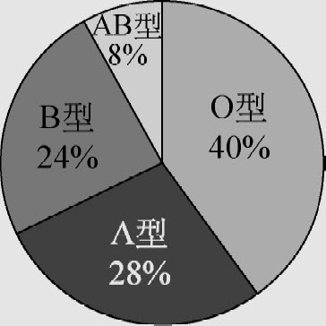
图4-8
案例1 六年级有200名同学，血型情况如图4-8所示。
（1）从图中你能发现哪些信息？
（2）该年级学生中各种血型各有多少人？
（3）该校有1000人，你能估计各种血型的人数吗？
分析 （1）从扇形图中可以初步得到如下信息：在200名同学中有四种血型，这四种血型O型的人最多、占40％，A型和B型的人数分别排第二、第三，AB型的人最少，只占8％。
（2）200人中O型、A型、B型和AB型的人数分别有：80、56、48、16人。
（3）可以把200人的数据作为一次抽样调查的数据，从而可以估计其他人群（如全校、本地区等等）血型的分布情况。该校学生中各种血型的人数估计为：O型、A型、B型和AB型的人数分别大约有：400、280、240、80人。
案例2 一家公司2012年和2013年职工年工资情况如表4-6所示。
表4-6
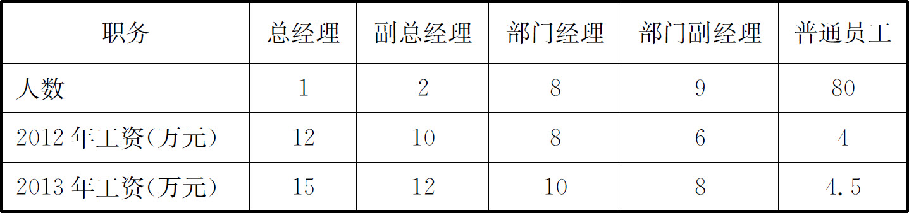
（1）这家公司2012年和2013年职工平均工资各是多少？
（2）这家公司对外宣称，2013年职工平均工资比2012年增长17％以上，如何评价这种说法？
分析 （1）2012和2013年职工平均工资分别为：
（12＋2×10＋8×8＋9×6＋80×4）÷100＝4.7（万元）；
（15＋2×12＋8×10＋9×8＋80×4.5）÷100＝5.5（万元）。
（2）（5.5-4.7）÷4.7≈17.02％，（4.5-4）÷4＝12.5％。从全体职工平均工资角度看，2013年比上年增长确实超过17％。但是代表公司大多数的普通员工的平均工资低于平均数，增长率也低于平均增长率，普通员工与中高级管理人员的收入差距在逐年扩大。公司的这种说法高估了普通职工的收入增长率。
案例3 有关部门对一个社区的100个居民月度人均用水量进行了调查统计，数据如表4-7所示：
表4-7
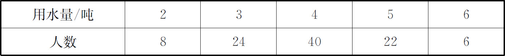
（1）计算这组数据的平均数、中位数和众数。
（2）什么数可以代表居民人均用水量的一般水平？
（3）如果采取阶梯水价，标准用水量以上加价收费，希望至少70％的居民不受影响，你认为人均标准用水量定为多少比较合适？
分析
（1）平均数：（2×8＋3×24＋4×40＋5×22＋6×6）÷100＝3.94（吨）。
中位数和众数都是4吨。
（2）中位数和众数相等，平均数也约等于中位数和众数，这三个量差别很小，都可以作为该组数据一般水平的代表。
（3）100×70％＝70，用水量在4吨及以下的人数为72人，所以人均标准用水量定为4吨比较合适。
案例4 某校为了了解该校六年级同学对排球、乒乓球、羽毛球、篮球和足球五种运动项目的喜爱情况（每位同学必须且只能选择最喜爱的一项运动项目），对部分同学进行了调查，并将调查结果绘制成了如下所示的不完整统计图表。
（1）请补全下列调查人数分布表（表4-8）和条形统计图（图4-9）；
表4-8 调查人数分布表
| 类别 | 人数 | 百分比 |
| 排球 | 6 | 6 |
| 乒乓球 | 28 | 28 |
| 羽毛球 | 30 | |
| 篮球 | 20 | |
| 足球 | 16 | 16 |
| 合计 | 100 |
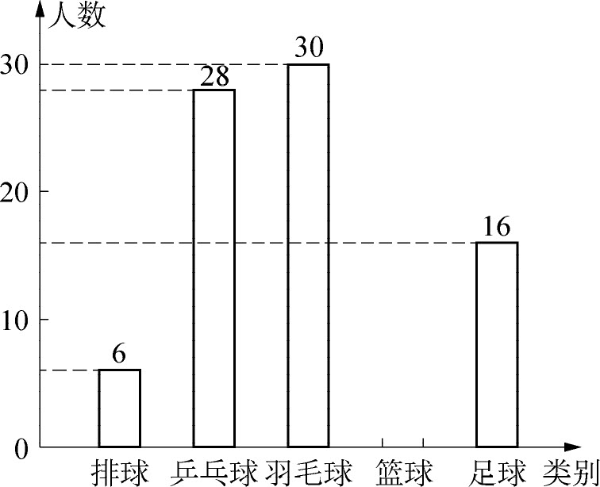
图4-9
（2）若六年级学生总人数为430人，请你估计六年级学生喜爱羽毛球运动项目的人数。
分析 用排球的人数除以所占的百分比可以求出调查的总人数，6÷6％＝100（人）；用调查的总人数乘上篮球所占的百分比即可求出篮球的人数，100×20％＝20（人）；用羽毛球的人数除以调查的总人数，可以求出羽毛球所占的百分比，30÷100＝30％。喜欢羽毛球的占30％，430×30％＝129（人）。
生活中的事件可以分成两类：一类是确定事件，在一定条件下一定发生的和一定不会发生的，这些事件都是确定事件。如每天日出日落、四季轮回是一定发生的，而掷两枚骰子朝上的两个数字的和是13是不可能发生的。另一类是随机事件，就是在一定条件下可能发生也可能不发生的事件，如一个产妇生男婴还是生女婴、某种子是否发芽、某产品是否合格等事件，都是随机事件。这些随机事件表面上看杂乱无章，但是大量地重复观察这些事件时，这些随机事件会呈现规律性，这种规律叫统计规律，概率论是研究随机现象的统计规律性的一门数学学科，统计与概率有着密切的联系。
事件可以分为确定事件和随机事件，其中确定事件又可以分为必然事件和不可能事件。在一定条件下一定发生的是必然事件，一定不会发生的是不可能事件。
随机事件发生的可能性的大小是概率论研究的主要内容，通过试验来观察随机事件发生的可能性的大小是常用的方法。在相同的条件下，重复进行n 次试验，某一事件A 出现的次数m 就是频数，
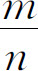
就是事件A 出现的频率。如果试验的次数不断增加，事件A 发生的频率稳定在某个常数上，就把这个常数记作P （A ），称为事件A 的概率。事件的概率是确定的、不变的常数，是理论上的精确值；而频率是某次具体试验的结果，是不确定的、变化的数，尽管这种变化可能非常的小。
这里的概率是用频率来界定的，在等可能性随机试验中，虽然频率总是在很小的范围内变化，但我们可以认为频率和概率的相关性非常的强。也就是说，在一次试验中，事件A 出现的频率越大、事件A 的概率就越大；事件A 出现的频率越小、事件A的概率就越小。反之亦然。
古典概型：试验中所有可能出现的基本事件是有限的，每个基本事件出现的可能性相等。如比较经典的投硬币和掷骰子试验，都属于这种概率模型。
几何概型：试验中每个基本事件发生的概率只与构成该事件区域的长度（面积、体积）成比例。如比较常见的转盘游戏，就是几何概率模型。
生活中的很多现象都是随机现象，如气候变化、物价变化、体育比赛、汽车流量、彩票中奖等等。这些随机事件，如果能够比较准确地预测它发生的可能性的大小，就会为我们的工作和生活带来很多方便、解决很多问题。随着科技的发展，气象部门已经能够比较准确地预报天气变化，对气温、降水量、风力、风向等的变化作出比较准确的预测，帮助人们提早作出预防，从而减少灾害的发生。这些现象都离不开对数据的分析以及对事件发生可能性大小的定量刻画，从而作出合理的预测和决策，这正是统计与概率研究的主要内容。因而，统计与概率的思想方法既是进一步学习的基础，也是人们在生活和工作中必须掌握的。
随机思想主要应用于统计与概率领域。一是小学数学安排了可能性的内容，如体会简单的等可能性随机事件发生的可能性大小。二是统计推断中很多情况是根据对随机事件的相关数据进行分析后，再对随机事件发生的可能性大小进行预测和决策。如2010年南非世界杯决赛西班牙对荷兰，有人预测西班牙夺冠，理由是西班牙是近年欧洲冠军、实力雄厚；还有人预测荷兰卫冕，理由是荷兰是无冕之王、两次获得世界杯亚军。西班牙和荷兰两队历史上一共交手9次，其中荷兰4胜1平4负，实力不分上下。所以两队夺冠的可能性各占一半。
《标准（2011版）》与《标准（实验版）》相比，已经降低了小学数学中概率内容的教学要求，具体目标如表4-9所示。
表4-9
| 学段 | 随机思想教学目标 |
| 第二学段 | 1．在具体情境中，通过实例感受简单的随机现象；能列出简单的随机现象中所有可能发生的结果。 2．通过试验、游戏等活动，感受随机现象结果发生的可能性是有大小的，能对一些简单的随机现象发生的可能性大小作出定性描述，并能进行交流 |
《标准（2011版）》通过第97页例41进行解读，题目给出4张实物图片，其中有2条船、1所房子、1辆汽车，问题是：从中任意选取一张，这张卡片可能是什么？
根据以上教学目标，学生对此题的理解应达到以下几个层次：
（1）这是一个随机现象，每张卡片都可能被选取，同时也无法确定哪张卡片一定被选取。
（2）每张卡片被选取的可能性相等，即事件的等可能性。
（3）所有可能发生的结果有3种：船、房子、车。
（4）在这4张卡片中，船有2张，而房子和车各有1张，所以任意选取一张出现3种结果的可能性的大小是不同的；是船的可能性大。
即使降低了教学要求，也不能认为学生就能够完全达到这个目标。巩子坤等人对小学生学习概率的研究表明“在学生中，尤其是在高年级学生中，等可能性偏见也是一类常见的错误概念。”“这是因为学生不能正确列出事件中的所有基本事件，即不能正确找出样本空间，从而导致了等可能性偏见这一错误概念的使用……认为所有结果平分机会，而不管每个结果是不是等可能的……” (2) 该研究通过对803名学生的测试发现，学生出现等可能性偏见错误的频率随年龄的增长不降反升，在11岁达到顶峰，12岁有所下降，但错误率仍然高达20％以上。
所以在今后的概率教学中，应注意以下几点。
第一，随机事件的发生是有条件的，是在一定条件下，事件发生的可能性才有某一大小；条件变了，事件发生的可能性大小也可能会变化。如种子的发芽率与很多因素有关，如种子的质量、保存期限、温度、水分、土壤、阳光、空气等等。在各种条件都合适的情况下，发芽率可能高达90％；条件不合适发芽率可能降到50％甚至不发芽。
第二，避免把频率与概率混淆。如最经典的就是用掷硬币试验去验证概率。从概率的统计定义而言，做抛硬币试验是可以的，可以使学生参与实践活动、经历知识的形成过程、提高学习的兴趣。关键是广大教师心中要明白：试验次数少的时候频率与概率的误差可能会比较大，但是试验次数多，也不能每次都保证频率与概率相差很小，或者说试验次数足够大的两次试验，也不能保证试验次数多的比试验次数少的误差小。这是随机事件本身的特点决定的，教师要通过通俗的语言使学生清楚这一点。这样在抛硬币时出现什么情况都是正常的，在学生操作的基础上，有条件的可通过计算机模拟试验，还要呈现数学家们做的试验结果，使学生理解概率的统计定义。
第三，创设联系学生生活的情境，要注意每个基本事件是否具有等可能性。如下面的题目就不合适：全班50个学生，选一人代表全班参加科普知识竞赛，张三被选中的可能性是多少？事实上参加竞赛是有一定条件的，如需要学习好、知识面宽等，每个学生被选中的可能性是不相等的。在不计算事件的可能性的大小的情况下，要通过多种素材让学生体会哪些事件是等可能性的，哪些不是。如投一个正方体的骰子，1～6每个数字出现的可能性相等；如果把一个棱长不等的长方体六个面上刻上数字1～6，那么每个数字出现的可能性就不相等。
第四，概率是理论上的精确值，但是随机事件在具体一次试验中可能出现意外，即频率与概率有一定偏差。随机中有精确，精确中有随机，这是对待概率的一种科学态度。
无论是教师还是学生，在教学和学习概率知识之前都接受了大量的传统的确定性的数学，当突然面对概率这种具有不确定性的知识时，需要观念的转变，要具有确定性与不确定性的对立统一思想。
案例1 连续两次抛掷一枚硬币，如果第一次正面朝上，那么第二次一定是反面朝上吗？
分析 从概率角度分析，抛一枚硬币正面和反面朝上的可能性相等，都是二分之一；并不会因为第一次正面朝上而影响第二次正面和反面朝上的可能性相等的理论事实。因此，第二次正面和反面朝上的可能性仍然相等。
案例2 天气预报预测明天降水概率是90％，明天一定下雨吗？
分析 明天是否降水是一个随机事件，尽管降水概率高达90％，说明降水的可能性很大，但可能性很大的事件也可能不发生，如果遇到天气情况的突然变化，改变了降水的条件，也可能明天不下雨，所以不能说明天一定下雨。
案例3 小明、小东、小丽每人带来1块糖，小明的是红色的、小东的是黄色的、小丽的是绿色的，这3块糖只有包装纸的颜色不同，其他方面都相同。把这3块糖放在一个盒子里，每人任意取1块。
（1）下列事件一定发生的是（ ）。
A．小东恰好取到自己带来的糖
B．小丽取到别人带来的糖
C．每个人都取到1块糖
D．小明取到小丽带来的糖
（2）3人都取到自己带来的糖，都没有取到自己带来的糖，哪个可能性大？
分析 （1）根据题目的信息可知，每人取到1块糖是一定的，而取到什么颜色的是不确定的。所以C是正确答案。（2）此题可把所有可能的结果穷举出来，再比较可能性的大小。按照小明、小东、小丽的顺序，有以下6种组合：
（红，黄，绿），（红，绿，黄），（黄，红，绿），（黄，绿，红），（绿，红，黄），（绿，黄，红）。
3人都取到自己带来的糖，只有（红，黄，绿）1种情况。
3人都没有取到自己带来的糖，有（黄，绿，红），（绿，红，黄）2种情况。所以第二种情况可能性大。
————————————————————
(1) 张奠宙、唐彩斌．关于小学“数学本质”的对话．人民教育，2009（2）．
(2) 巩子坤，高海燕．7—12岁儿童对概率概念的错误理解及其发展．小学教学（数学版），2014（3）．